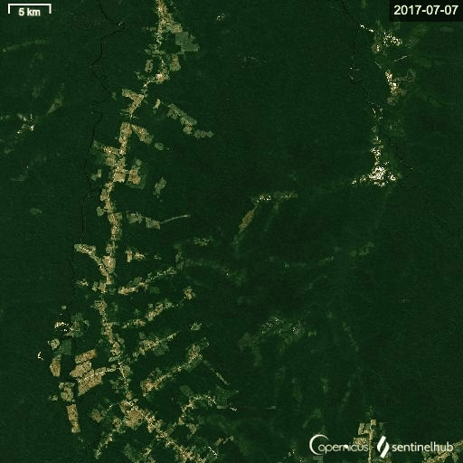
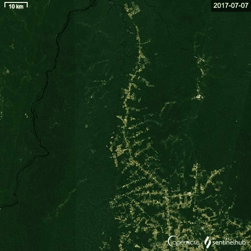

<!DOCTYPE html>
<html>
  <head>
    <meta charset="utf-8" />
    <title>Storytelling Test</title>
    <meta http-equiv="X-UA-Compatible" content="IE=edge" />
    <meta
      name="viewport"
      content="width=device-width, initial-scale=1.0, maximum-scale=1,user-scalable=no"
    />
    <script src="https://api.tiles.mapbox.com/mapbox-gl-js/v2.0.0/mapbox-gl.js"></script>
    <link rel="stylesheet" href="css/main.min.css" />
    <link
      href="https://api.tiles.mapbox.com/mapbox-gl-js/v2.0.0/mapbox-gl.css"
      rel="stylesheet"
    />

    <script src="https://unpkg.com/intersection-observer@0.5.1/intersection-observer.js"></script>
    <script src="https://unpkg.com/scrollama"></script>
  </head>
  <body>
    <div id="map"></div>
    <div id="story"></div>
    <script src="./js/config.js"></script>
    <script>
      var layerTypes = {
        fill: ["fill-opacity"],
        line: ["line-opacity"],
        circle: ["circle-opacity", "circle-stroke-opacity"],
        symbol: ["icon-opacity", "text-opacity"],
        raster: ["raster-opacity"],
        "fill-extrusion": ["fill-extrusion-opacity"],
        heatmap: ["heatmap-opacity"],
      };

      var alignments = {
        left: "lefty",
        center: "centered",
        right: "righty",
        full: "fully",
      };

      function getLayerPaintType(layer) {
        var layerType = map.getLayer(layer).type;
        return layerTypes[layerType];
      }

      function setLayerOpacity(layer) {
        var paintProps = getLayerPaintType(layer.layer);
        paintProps.forEach(function (prop) {
          var options = {};
          if (layer.duration) {
            var transitionProp = prop + "-transition";
            options = { duration: layer.duration };
            map.setPaintProperty(layer.layer, transitionProp, options);
          }
          map.setPaintProperty(layer.layer, prop, layer.opacity, options);
        });
      }

      var story = document.getElementById("story");
      var features = document.createElement("div");
      features.setAttribute("id", "features");

      var header = document.createElement("div");

      if (config.title) {
        var titleText = document.createElement("h1");
        titleText.innerText = config.title;
        header.appendChild(titleText);
      }

      if (config.subtitle) {
        var subtitleText = document.createElement("h2");
        subtitleText.innerText = config.subtitle;
        header.appendChild(subtitleText);
      }

      if (config.byline) {
        var bylineText = document.createElement("p");
        bylineText.innerText = config.byline;
        header.appendChild(bylineText);
      }

      if (header.innerText.length > 0) {
        header.classList.add(config.theme);
        header.setAttribute("id", "header");
        story.appendChild(header);
      }

      config.chapters.forEach((record, idx) => {
        var container = document.createElement("div");
        var chapter = document.createElement("div");

        if (record.title) {
          var title = document.createElement("h3");
          title.innerText = record.title;
          chapter.appendChild(title);
        }

        if (record.image) {
          var image = new Image();
          image.src = record.image;
          chapter.appendChild(image);
        }

        if (record.description) {
          var story = document.createElement("p");
          story.innerHTML = record.description;
          chapter.appendChild(story);
        }

        container.setAttribute("id", record.id);
        container.classList.add("step");
        if (idx === 0) {
          container.classList.add("active");
        }

        chapter.classList.add(config.theme);
        container.appendChild(chapter);
        container.classList.add(alignments[record.alignment] || "centered");
        if (record.hidden) {
          container.classList.add("hidden");
        }
        features.appendChild(container);
      });

      story.appendChild(features);

      var footer = document.createElement("div");

      if (config.footer) {
        var footerText = document.createElement("p");
        footerText.innerHTML = config.footer;
        footer.appendChild(footerText);
      }

      if (footer.innerText.length > 0) {
        footer.classList.add(config.theme);
        footer.setAttribute("id", "footer");
        story.appendChild(footer);
      }

      mapboxgl.accessToken = config.accessToken;

      const transformRequest = (url) => {
        const hasQuery = url.indexOf("?") !== -1;
        const suffix = hasQuery
          ? "&pluginName=scrollytellingV2"
          : "?pluginName=scrollytellingV2";
        return {
          url: url + suffix,
        };
      };

      var map = new mapboxgl.Map({
        container: "map",
        style: config.style,
        center: config.chapters[0].location.center,
        zoom: config.chapters[0].location.zoom,
        bearing: config.chapters[0].location.bearing,
        pitch: config.chapters[0].location.pitch,
        interactive: false,
        transformRequest: transformRequest,
      });

      // navigation control that can be added some chapters
      var nav = new mapboxgl.NavigationControl();

      // two fake datapoints for markers
      // TODO: source with link?
      var timelapsePoints = {
        type: "FeatureCollection",
        features: [
          {
            type: "Feature",
            geometry: {
              type: "Point",
              coordinates: [-59.9, -6.88],
            },
            properties: {
              title: "Timelapse",
              description: "Deforestation near Santarém, Pará, 2011-2021",
              media: '',
            },
          },
          {
            type: "Feature",
            geometry: {
              type: "Point",
              coordinates: [-54.76, -3.43],
            },
            properties: {
              title: "Timelapse",
              description: "Deforestation near Tenharim, Rondonia, 2011-2021",
              media: '',
            },
          },
        ],
      };

      // add markers to map
      timelapsePoints.features.forEach(function (marker) {
        // create a HTML element for each feature
        var el = document.createElement("div");
        el.className = "marker";

        // make a marker for each feature and add to the map
        new mapboxgl.Marker(el)
          .setLngLat(marker.geometry.coordinates)
          .setPopup(
            new mapboxgl.Popup({ offset: 25 }) // add popups
              .setHTML(
                "<p>" +
                  marker.properties.description +
                  "</p>" +
                  marker.properties.media
              )
          )
          .addTo(map);
      });

      // instantiate the scrollama
      var scroller = scrollama();

      map.on("load", function () {
        // Add a data source: SAD 2019 Alerts dataset (GeoJSON data).
        map.addSource("2019 Alerts", {
          type: "geojson",
          data: "https://opendata.arcgis.com/datasets/9c4a16f9520447349159fa30abcea08b_2.geojson",
        });

        // Add a new layer to visualize the 2019 polygons.
        map.addLayer({
          id: "2019 Alerts",
          type: "fill",
          source: "2019 Alerts", // reference the data source
          layout: {
            visibility: "visible",
          },
          paint: {
            "fill-color": "red", // red color fill
            "fill-opacity": 0.7,
          },
        });

        // add data source: brazil states geojson
        map.addSource("States", {
          type: "geojson",
          data: "./src/data/brazil-states.geojson",
        });

        // Add a new layer to visualize states polygons
        map.addLayer({
          id: "States",
          type: "line",
          source: "States",
          layout: {},
          paint: {
            "line-color": "#000",
            "line-width": 3,
          },
        });

        // setup the instance, pass callback functions
        scroller
          .setup({
            step: ".step",
            offset: 0.5,
            progress: true,
          })
          .onStepEnter((response) => {
            var chapter = config.chapters.find(
              (chap) => chap.id === response.element.id
            );
            response.element.classList.add("active");
            map[chapter.mapAnimation || "flyTo"](chapter.location);
            // if (config.showMarkers) {
            //     marker.setLngLat(chapter.location.center);
            // }
            if (chapter.onChapterEnter.length > 0) {
              chapter.onChapterEnter.forEach(setLayerOpacity);
            }
            if (chapter.callback) {
              window[chapter.callback]();
            }
            if (chapter.rotateAnimation) {
              map.once("moveend", function () {
                const rotateNumber = map.getBearing();
                map.rotateTo(rotateNumber + 90, {
                  duration: 24000,
                  easing: function (t) {
                    return t;
                  },
                });
              });
            }
            // when entering the timelapse chapters, make the markers visible
            if (chapter.id == "timelapse" || chapter.id == "timelapse1") {
              var markers = document.getElementsByClassName("marker");
              for (let i = 0; i < markers.length; i++) {
                markers[i].style.visibility = "visible";
              }
            }
          })
          .onStepExit((response) => {
            var chapter = config.chapters.find(
              (chap) => chap.id === response.element.id
            );
            response.element.classList.remove("active");
            if (chapter.onChapterExit.length > 0) {
              chapter.onChapterExit.forEach(setLayerOpacity);
            }

            // make the markers invisible again
            // also hide any pop up that is still open
            if (chapter.id != "timelapse") {
              let markers = document.getElementsByClassName("marker");
              for (let i = 0; i < markers.length; i++) {
                markers[i].style.visibility = "hidden";
              }
              let popups = document.getElementsByClassName("mapboxgl-popup");
              for (let i = 0; i < popups.length; i++) {
                popups[i].style.visibility = "hidden";
              }
            }
          });
      });

      // setup resize event
      window.addEventListener("resize", scroller.resize);

      // function testCallback() {
      //     console.log('successful callback from chapter')
      // }
    </script>
  </body>
</html>
